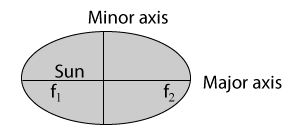
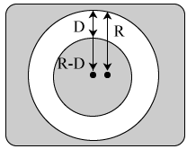
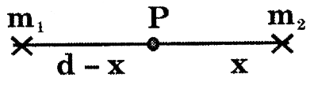
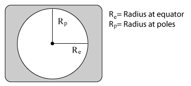

Introduction
Gravitation is a natural phenomenon by which all objects with mass attract each other, and is one of the fundamental forces of physics. It is responsible for keeping the earth and the other planets in their orbits around the sun; for keeping the moon in its orbit ,around the earth, for the formation of tides and for various other phenomena that we observe. Gravitation is also the reason for the very existence of the earth, the sun, and most macroscopic objects in the universe; without it, matter would not have coalesced into these large masses and life, as we know it, would not exist.
Kepler's Law of Motion
Law of Orbit
All planets move around the sun, in an elliptical orbits with the sun located at one of its focii.

\( f_1, \ f_2 \) - focii, r - semi major axis
Law of areas
The line joining the sun to any planet known as radius vector sweeps out equal areas in equal time intervals.
(or)
The areal velocity of the radius vector joining the sun and a planet is constant. (It is a consequence of law of conservation of angular momentum (L) (where L = mvr).
Law of periods
The square of the period of revolution of a planet around the sun varies directly as the cube of the semi-major axis of its elliptical path.
\( T^2 \propto R^3 \ \ or \ \frac{T^2}{R^2} = constant \)
Terrestrial Versus Celestial Gravity
A ball thrown up always comes down. Raindrops fall. Fruits and leaves fall from trees. Why do things fall?
Newton was the first to figure out the correct answer to the above question. This is often said in the form of a story of the fall of the proverbial apple in Newton's garden. Newton propounded the hypothesis that the fall of apple is due to the presence of an attractive force between the Earth and the apple. This attractive force is known as terrestrial gravity. Then it is natural to wonder if the Moon is also pulled by the Earth in a similar way. He concluded that all celestial bodies, including the Moon, the Earth, and the Sun, attract each other by a force that he called celestial gravity.
Planets move round the Sun in elliptic or nearly circular orbits and the satellites move around their respective planets. What is the force that drives all these accelerated motion? What is the 'string' that 'swings' the Moon around the Earth?

The celestial gravity provides the necessary centripetal force to keep all the celestial objects moving in their respective orbits. It was Newton's genius in recognizing that both terrestrial gravity and celestial gravity are the manifestation of the same force. He quantified this attractive force in terms of a law known as the universal law of gravitation. Now, we know that the whole universe is held together as a consequence of this law.
Newton's universal Law of Gravitation
Every particle of matter in the universe exerts an attractive force on every other particle, the force being directly proportional to the product of their respective masses and inversely proportional to the square of the distance of their separation. The force of attraction always acts along the line joining the two particles.
\( F \propto m_1 m_2 \)
\( F \propto \frac{1}{r^2} \Rightarrow F = G \frac{m_1 m_2}{r^2} \)
Where 'G' is called the 'Universal gravitational constant' and is equal to \( 6.67 \times 10^{-11} \ Nm^2 \ Kg^{-2} \)
Characteristic of G
-
It does not depend on the medium between two bodies.
-
It does not depend on the masses of the bodies.
-
It does not depend on the distance between the bodies.
Suppose if \( m_1= m_2 = 1 \ kg \) and r = 1 m
then \( F = G \frac{1 \times 1}{1} \) or G = F
Therefore "universal gravitational constant is numerically equal to the force of attraction between unit masses placed at unit distance apart."
Units of G
From equation \( F = G \frac{m_1 m_2}{r^2} \ or \ G = F \times \frac{r^2}{m_1 m_2} \)
UnitS of force are newtons (N), masses \( m_1 \) and \( m_2 \) are in kg and distance 'r' is in meters (m).
\( \therefore \) Unit of G in SI units is \( N m^2 kg^{-2} \)
Value of G
Cavendish was the first scientist to measure the value of G experimentally in 1798. Two heavy gold balls were suspended near each other by strong threads. The force between the gold balls was measured. Knowing the force, masses of the gold balls and distance between them, the value of G was calculated using Newton's gravitational formula.
The experimental value of G was found to be \( G = 6.67 \times 10^{-11} \ N m^2 kg^{-2} \)
Thus the force of gravitation between two masses of 1 kg each kept 1 m apart will be
\( F = G \times \frac{1 \times 1}{1} = G = 6.67 \times 10^{-11} newtons \)
When two point objects are kept apart by certain distance if the net gravitational force is zero at a point (p) which lie in between them and distance of the point (P) is given by the formula.
\( \frac{m_1}{(d- x)^2} = \frac{m_2}{x_2} \)

If \( m_1 > m_2 \) then (d - x) > x i.e., the point at which resultant gravitational field is zero lie in between them and closer to the object of smaller mass.
Acceleration due to Gravity (g)
When an object is dropped from some height, its velocity increases at a constant rate due to the gravitational force oer af te the earth or in other words it is acceld. This acceleration is called the acceleration due to gravity. It is represented by the letter 'g'.
The uniform acceleration produced by a freely falling body under the gravitational pull of the earth.
\( g = 9.8 ms^{-2} = 980 cm \ s^{-2} \)
Relation between 'g' and 'G'
\( g = \frac{GM}{R^2} = G \rho \frac{4}{3} \pi R \)
| S.No |
Acceleration due to gravity (g) |
Universal gravitational constant 'G' |
| 1 |
Acceleration of a freely falling body due to earth's gravitational attraction is called acceleration due to gravity of earth with the distance towards the centre of earth. |
It is the force of attraction between two unit masses by a unit distance of separation. |
| 2 |
It is a vector quantity. |
It is a scalar quantity. |
| 3 |
Its value is constant at a given place but changes from place to place. |
It is universal constant. |
| 4 |
SI unit of acceleration due to gravity `g' is m \( s^{-2} \)
|
SI unit of universal gravitational constant is \( N m^2 kg^{-2} \)
|
Relation between \( g_{earth}, \ g_{moon} \) and \( g_{sun} \)
\( g_{earth} = 6g_{moon} = \frac{1}{7} g_{sun} \)
Therefore the acceleration due to gravity on the surface of moon is one sixth that on the earth. Acceleration due to gravity of sun is approximately 7 times the acceleration due to gravity on the earth.
Factors Influencing the g
The value of g varies from place to place because of the change in the following factors below
Altitude
Let acceleration due to gravity on the surface of a planet of mass 'M' and radius 'R' be 'g' and at a height 'h' be \( 'g_h \)
Then,
\( \begin{align} g = \frac{GM}{R^2}, \ g_h = \frac{GM}{(R + h)^2} \\\\[3pt]
\frac{g_h}{g} = \frac{R^2}{(R + h)^2} \Rightarrow g_h = g \left( \frac{R}{R + H} \right)^2 \\\\[3pt]
\Rightarrow g_h = g \left( 1 + \frac{h}{R} \right)^{-2} \end{align} \)
For heights close to surface of earth i.e., h < < R
\( \begin{align} \Rightarrow \frac{g_h}{g} = \left( 1 + \frac{h}{R} \right)^{-2} \thickapprox 1 - \frac{2h}{R} \\\\[3pt]
\Rightarrow g_h \thickapprox g \left(1 - \frac{2h}{R} \right) \end{align} \)
Depth
Assuming earth to be a sphere of uniform density \( \rho \)
\( M = \frac{4}{3} \pi R^2 \rho \)

\( g = \frac{GM}{R^2} = \frac{ G \left( \frac{4}{3} \pi R^3 \rho \right)}{R^3} = \frac{4}{3} \pi G\rho R \)
if body is taken to a depth d below earth's surface then
\( \begin{align} g_d = \frac{GM^1}{(R - d)^2} = \frac{G \left[ \frac{4}{3} \pi (R - d)^3 \rho \right]}{(R - d)^2} \\\\[3pt]
g_d = \frac{4}{3} \pi G \rho (R - d) \\\\[3pt]
\frac{g_d}{g} = \frac{R - d}{R} = 1 - \frac{d}{R} \\\\[3pt]
g_d = \left( 1 - \frac{d}{R} \right) g \end{align} \)
At poles and equator
Earth is not a perfect sphere. It is bulged at equator and flattened at poles. Hence, \( R_{equatorial} > R_{poles} \)
But \( g \propto \frac{1}{R^2} \)
\( \therefore \) g is maximum at poles and minimum at equator.

Solved examples
Example 1:
Two spheres of masses 100 kg and 900 kg each of radius 10 m and 20 m respectively. Find gravitational force acting between them.
Solution:
The formula to be used is \( F = \frac{G m_1 m_2}{d^2} \) . It is applicable for all point objects. In the problem given sphere are to be replaced by point objects of same mass placed at their centre (assuming uniform density). So, distance between them will be 30 m. Then
\( F = \frac{6.67 \times 10^{- 11} \times 100 \times 900}{30 \times 30} = 6.67 \times 10^{-9} N \)
Example 2:
The gravitational force acting between point objects \( m_1 \) and \( m_2 \) separated by a distance 'd' is 'F'. What will be the force of gravitation between them if
-
one mass is increased by 100%
-
each mass is tripled ?
-
each mass is quadrupled and distance between them is halved ?
-
mass of each body is increased by 40% and the distance between them is decreased by 25% ?
Solution:
Given \( F = \frac{G m_1 m_2}{d^2} ........(1) \)
-
Final mass of one object is \( m_1 + \frac{100}{100} m_1 = 2m_1 \)
Then \( F' = \frac{G 2m_1 m_2}{d^2} = 2F \)
-
Final mass of objects are \( (3m_1) (3m_2) \)
Then \( F' = \frac{G (3m_1) (3m_2)}{d^2} = 9F \)
-
Final mass of objects are \( (4m_1) (4m_2) \) and final distance is \( \left( \frac{d}{2} \right) \)
Then \( F' = \frac{G (3m_1) (3m_2)}{ \left( \frac{d}{2} \right)}^2 = 64 \ F \)
-
Final mass of each object is \( m_1 + \frac{40}{100} m_1 = \frac{14 m_1}{10}; \ \left( \frac{14 m_2}{10} \right) \)
Final distance between the masses is = \( d - \frac{25}{100} d = \frac{75}{100} d = \frac{3d}{4} \)
Then
\( \begin{align} F' = \frac{ G \left( \frac{14}{10} m_1 \right) \left( \frac{14}{10} m_2 \right)}{ \left( \frac{3d}{4} \right)^2} \\\\[3pt]
= \frac{G m_1 m_2}{d^2} \\\\[3pt]
= \frac{14}{10} \times \frac{14}{10} \times \frac{16}{9} F \\\\[3pt]
= \frac{3136 F}{900} \end{align} \)
Example 3:
Gravity at any depth below the surface of the earth is \( g' = g \left(1 - \frac{d}{R} \right) \) for all. Acceleration due to gravity at a height 'h' above the earth is \( g' = g \left(1 - \frac{2h}{R} \right) \) for h < < R and \( g' = g \left( \frac{R}{R + H} \right)^2 \) for any height 'h'. 'd' (R = 6400 km; 'g' is gravity on earth and g' is gravity at specified position)
-
Find height where the gravity is same as at a depth 20 km
-
Find height where the gravity is same as at a depth 4800 km
Solution:
-
(a) 15 km is a small depth. So, formula to be used is \( g' = g \left(1 - \frac{2h}{R} \right) \) and \( g' = g \left(1 - \frac{d}{R} \right) \)
Then \( g' = g \left(1 - \frac{d}{R} \right) = g \left(1 - \frac{2h}{R} \right) \Rightarrow 2h = d \Rightarrow h = \frac{d}{2} = \frac{20}{2} = 10 \ km \)
-
Depth 4800 km is large. So, formula to be used is \( g' = g \left( \frac{R}{R + H} \right)^2 \) and \( g' = g \left(1 - \frac{d}{R} \right) \)
Then
\( \begin{align} g' = g \left(1 - \frac{d}{R} \right) = g \left( \frac{R}{R + H} \right)^2 \\\\[3pt]
\Rightarrow 1 - \frac{4800}{6400} = \left( \frac{6400}{6400 + h} \right)^2 \\\\[3pt]
\frac{16}{64} = \left( \frac{6400}{6400 + h} \right)^2 \\\\[3pt]
\Rightarrow \frac{1}{2} = \left( \frac{6400}{6400 + h} \right) \\\\[3pt]
\Rightarrow 2 \times 6400 = 6400 + h \Rightarrow h = 6400 \ km
\end{align} \)
Example 4:
A body weighs 900 N on the earth. Find its weight on a planet whose
-
density is \( \frac{1}{3} rd \) the density of earth; radius is \( \frac{1}{4} th \) that of the earth.
-
mass is \( \frac{5}{4} th \) of mass of earth; radius is \( \frac{3}{2} rd \) that of the earth.
Solution:
Recall the formula for weight \( W = mg = m \left( \frac{GM}{R^2} \right) = m \left( g \left( \frac{4}{3} \pi R \right) \rho \right) \) where 'M' denotes mass of earth; 'R' denotes radius of earth \( \rho \) denotes density of earth.
-
Given
\( \begin{align} 900 N = mG \left( \frac{4}{3} \pi R \right) \rho = m \left( \frac{GM}{R^2} \right) \\\\[3pt]
W_1 = mG \frac{4}{3} \pi \left( \frac{R}{4} \right) \left( \frac{1}{3} \right) \rho \\\\[3pt]
= mG \left( \frac{4}{3} \pi R \right) \rho \left( \frac{1}{4} \times \frac{1}{3} \right) \\\\[3pt]
= 900 \times \frac{1}{4} \times \frac{1}{3} = 75 N \end{align} \)
-
On the planet,
\( \begin{align} W_2 = \frac{mG \left( \frac{5}{4} M \right)}{ \left( \frac{3R}{2} \right)^2} \\\\[3pt]
= m \left( \frac{GM}{R^2} \right) \left( \frac{5}{9} \right) \\\\[3pt]
= \frac{900 \times 5}{9} \Rightarrow W_2 = 500 N \end{align} \)
Example 5:
Calculate the force of gravitation between two bodies weighing 50 kg and 10 kg kept at a distance 5 meters apart. If the distance between them is increased by 5 m then find the percentage change in force. \( (G = 6.67 \times 10^{-11} \ N m^2 kg^{-2}) \) .
Solution:
Using Newton's formulae, \( F = G \frac{m_1 m_2}{r^2} \)
\( \begin{align} \therefore G = 6.67 \times 10^{-11} Nm^{-2} kg^{-2}, \ m_1 = 50 \ kg, \ m_2 = 10 \ kg, \ r = 5 m \\\\[3pt]
\therefore F = 6.67 \times 10^{-11} \times \frac{50 \times 10}{5 \times 5} = 13.34 \times 10^{-10} N \\\\[3pt]
r' = (r + 5) m = 10 m (or) 2r \\\\[3pt]
\therefore F' = \frac{G m_1 m_2}{(r^|)^2} = \frac{G m_1 m_2}{(2r)^2} = \frac{F}{4} \end{align} \)
percentage change in force = \( \frac{F' - F}{F} \times 100 = \frac{ \frac{F}{4} - F}{F} \times 100 = - 75 \% \)
Hence force decreased by 75%.
Example 6:
At what height from the surface of the earth will the value of g we reduced by 64 % from the value at the surface.
Solution:
Let h be the height at which the value of the g will get reduced by 64%.
\( g' = \frac{36}{100} g \)
Such a large decrease in the value of g will occur at a very large height.
\( g \frac{R^2}{(R + h)^2} = \frac{36}{100} g \ or \ \frac{R}{R + H} = \frac{6}{10} \ or \ h = \frac{4R}{6} = 4266.7 \ km \)
Example 7:
A satellite of mass 500 kg is in an orbit \( 100 \times 10^6 \ m \) from the centre of the earth. The mass of the earth is \( 6.0 \times 1024 \ kg. \) What is the force of attraction on the satellite by the earth? What is the force of attraction on the earth by the satellite?
Solution:
Applying Newton's law of gravitation
\( F = \frac{GMm}{r^2} \)
\( = \frac{6.67 \times 10^{-11} \times (6.0 \times 10^{24}) \times 500}{(100 \times 10^6)^2} = 20.0 N \)
The force of attraction on the earth by the satellite is also 20 N
Example 8:
What will be the gravitational force between two bodies if
-
the distance between them is doubled?
-
the distance between them is halved?
Solution:
Force of gravitation \( F = G \frac{m_1 m_2}{r^2} \)
-
When the distance is doubled, \( R = 2r \)
\( \therefore F_1 = G \frac{m_1 m_2}{R^2} = G \frac{m_1 m_2}{4r^2} = \frac{1}{4} G \frac{m_1 m_2}{r^2} \) but \( F = G \frac{m_1 m_2}{r^2} \)
\( \therefore F_1 = \frac{1}{4} F \)
Gravitational force becomes one fourth, when the distance is doubled
-
When the distance between the bodies is halved, \( R = \frac{1}{2 r} \)
\( \begin{align} \therefore F_2 = G \frac{m_1 m_2}{R^2} \\\\[3pt]
= G \frac{m_1 m_2}{ \left( \frac{1}{2} r \right)^2} \\\\[3pt]
= 4G \frac{m_1 m_2}{r^2} = 4F \end{align} \)
\( \therefore F_2 = 4F \)
Gravitational force becomes four times when the distance is halved.
Example 9:
Calculate the force of gravitation between two bodies weighing 50 kg and 10 kg kept at a distance 5 meter apart. \( (G = 6.67 \times 10^{-11} Nm^{-2} kg^{-2}) \)
Solution:
\( \begin{align} m_1 = 50 \ kg \\\\[3pt]
m_2 = 10 \ kg \\\\[3pt]
d = 5 \ m \\\\[3pt]
F = ? \\\\[3pt]
\therefore F = G \frac{m_1 m_2}{d^2} \\\\[3pt]
F = 6.67 \times 10^{-11} \times \frac{50 \times 10}{5 \times 5} = 13.34 \times 10^{-10} N \end{align} \)
Example 10:
Find the force with which two friends having same man of 60 kg and sitting on benches separated by 2 meters, attracts each other.
Solution:
\( m_1 \) and \( m_2 \) = 60 kg
Distance between them d = 2 m
Gravitational constant \( G = 6.67 \times 10^{-11} N m^2 kg^{-2} \)
Force F = ?
From the former \( F = G \frac{m_1 m_2}{d^2} \)
Putting value, we get \( F = 6.67 \times 10^{-11} \times \frac{60 \times 60}{2 \times 2} \)
\( F = 6.67 \times 10^{-11} \times \frac{3600}{4} \)
\( F = 6.67 \times 10^{-11} \times 900 = 6.67 \times 9 \times 10^{-19} = 60.03 \times 10^{-9} N \)
Example 11:
The mass of earth is \( 6 \times 10^{24} kg \) and that of the moon is \( 7.4 \times 10^{22} kg \) If the distance between earth and moon is \( 3.84 \times 10^5 km. \) Calculate the for exerted by the earth on the moon. \( (G = 6.7 \times 10^{-11} Nm^{-2} kg^{-2}) \)
Solution:
Mass of earth is \( m_1 = 6 \times 10^{24} kg \)
Mass of moon \( m_2 = 7.4 \times 10^{22} kg \)
Distance between earth and moon \( d = 3.84 \times 10^5 km = 3.84 x 10^8 m \)
Universal gravitational constant \( G = 6.67 x 10^{-11} N m^2 kg^{-2} \)
Force of the earth on moon F = ?
We know \( F = G \frac{m_1 m_2}{r^2} \)
putting the values we get
\( F = \frac{6.67 \times 10^{-11} \times 6 \times 10^{24} \times 7.4 \times 10^{22}}{(3.84 \times 10^8 m)^2} \)
\( \begin{align} = \frac{6.67 \times 6 \times 7.4 \times 10^{35}}{3.84 \times 3.84 \times 10^{16}} \\\\[3pt]
= \frac{296.148}{14.7456} \times 106{19} N \\\\[3pt]
= 2.08 \times 10^{19} N = 2.0008 \times 10^{20} N \end{align} \)
Force exerted by the earth on the moon F
\( F = 2.01 \times 10^{20} N \)
Example 12:
Calculate the force of gravitation due to earth on a ball of mass 60 kg
Solution:
Mass of earth = \( 6 \times 10^{24} kg \)
Radius of earth = \( 6.4 \times 10^3 km = distance \)
\( G = 6.7 \times 10^{-11} Nm^{-2} kg^{-2} \)
Mass of ball = 60 kg
We know that \( F = G \times \frac{m_1 m_2}{d^2} \)
Putting the value
\( F = \frac{6.7 \times 10^{-11} \times 6 \times 10^{24} \times 60}{(6.4 \times 10^6)^2} = 588.8 N \)
Example 13:
How does the force of gravitation, between two bodies change when the distance between them is reduced to half?
Solution:
Case -I
Mass of the 1st body before change = m_1
Mass of the 2^{nd} body before change = m_1
Distance between them before change = d
Case -II
Mass of the 1st body before change = m_1
Mass of the 2^{nd} body before change = m_1
Distance between them before change = \( \frac{d}{2} \)
As we know \( F = G \frac{m_1 m_2}{d_1^2} \)
Applying this equation to both cases.
\( \begin{align} F_1 = \frac{G m_1 m_2}{(d)^2} .......(1) \\\\[3pt]
F_2 = \frac{G m_1 m_2}{ \left( \frac{d}{2} \right)^2} .......(2) \end{align} \)
Dividing the equation (2) by (1) then
\( \begin{align} \frac{F_2}{F_1} = \frac{G \frac{m_1 m_2}{(d)^2}}{ \frac{G m_1 m_2}{ \left( \frac{d}{2} \right)^2} } \\\\[3pt]
\frac{F_2}{F_1} = \frac{G m_1 m_2}{G m_1 m_2} \times \frac{(d)^2}{ \left( \frac{d}{2} \right)^2} \\\\[3pt]
\frac{F_2}{F_1} = \frac{(d)^2}{ \left( \frac{d}{2} \right)^2} = 4 \end{align} \)
Force becomes 4 times